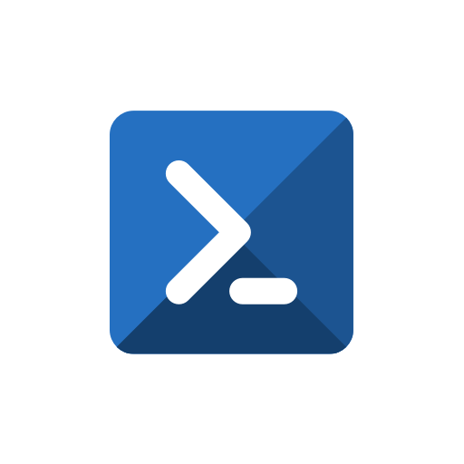
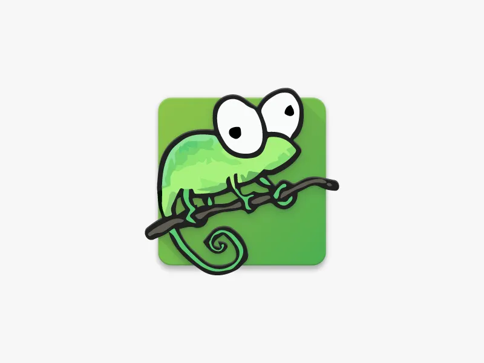
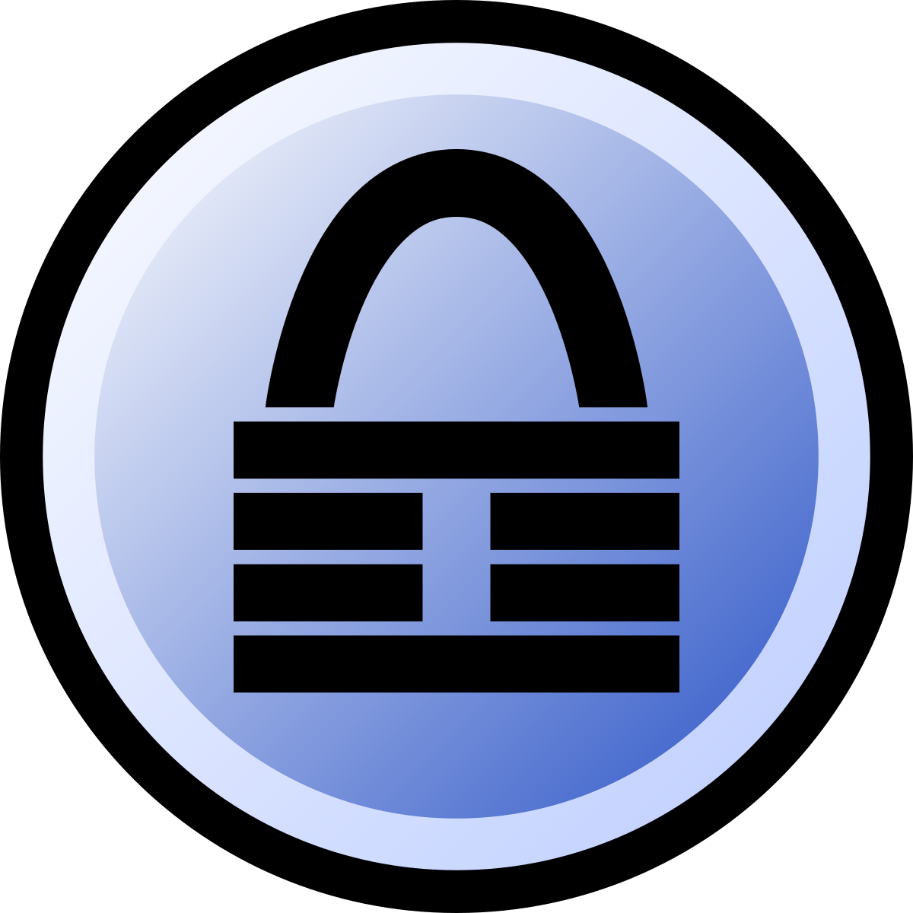
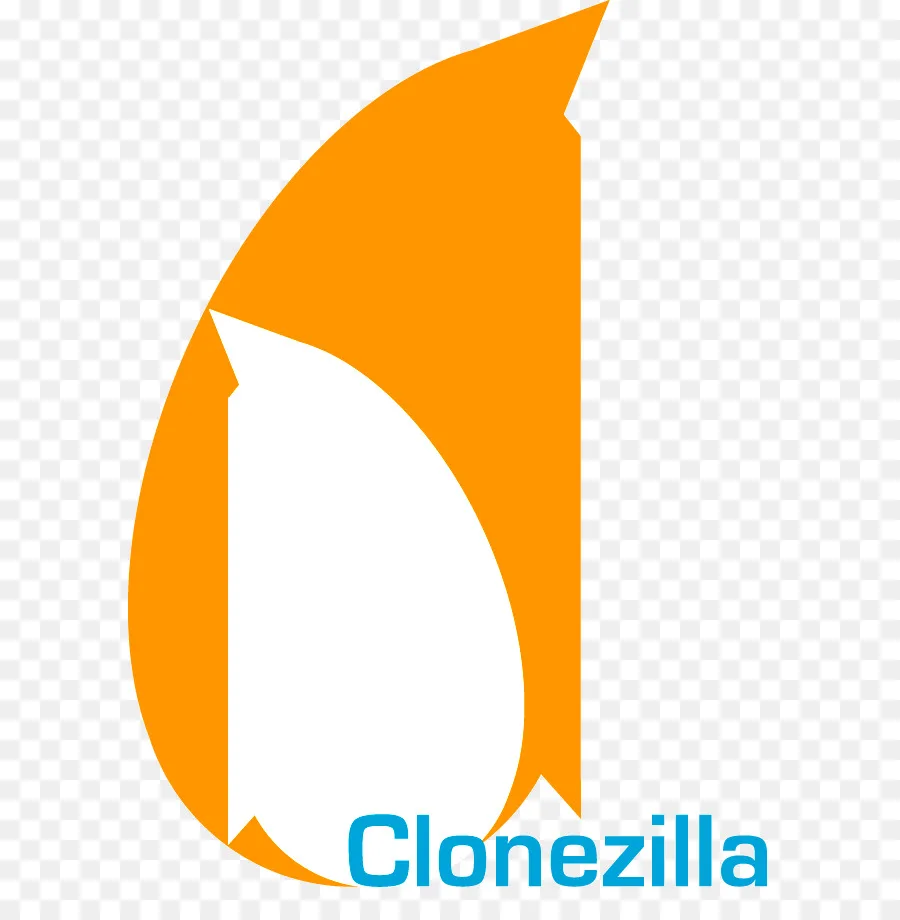
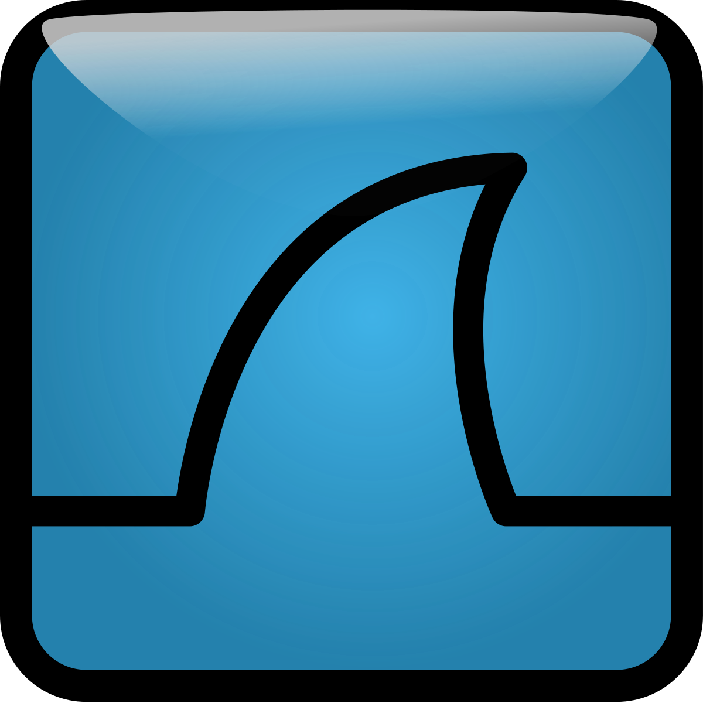

Есть множество инструментов, позволяющих облегчить жизнь сисадминам. Ниже привожу пример некоторых из них.
PowerShell

PowerShell — это кроссплатформенный решение для автоматизации задач который работает на Windows, Linux и macOS. Это оболочка командной строки и язык сценариев, разработанный специально для автоматизации администрирования операционной системы Windows и всех программ, функционирующих в экосистеме Windows, а также для упрощения настройки.
Подробнее
Notepad ++

Notepad++ — бесплатный редактор исходного кода и замена Блокноту, работающая в среде MS Windows и использующая только Win32 API и СТЛ для обеспечения высокой скорости выполнения и меньшего размера программы.
Подробнее
Keepass

В современном мире все защищено паролем, а это значит, что вам придется запоминать сотни паролей для различных веб-сайтов, серверов, учетных записей электронной почты и сетевых входов. На уровне предприятия, где одной из основных обязанностей системных администраторов является защита безопасности компании, Управление паролями оказывается решающим фактором.
Подробнее
Clonezilla

Clonezilla — это инструмент клонирования дисков с открытым исходным кодом, который сохраняет и восстанавливает данные жесткого диска одного или нескольких компьютеров. Он известен своим развертыванием системы, резервным копированием на «голое железо» и восстановлением.
Подробнее
Wireshark

Wireshark — популярный анализатор сетевых протоколов, позволяющий отслеживать проблемы в сети. Этот инструмент позволяет ИТ-командам круглосуточно контролировать сетевой трафик и эффективно используется некоммерческими организациями, государственными секторами, корпорациями и образовательными учреждениями.
Подробнее